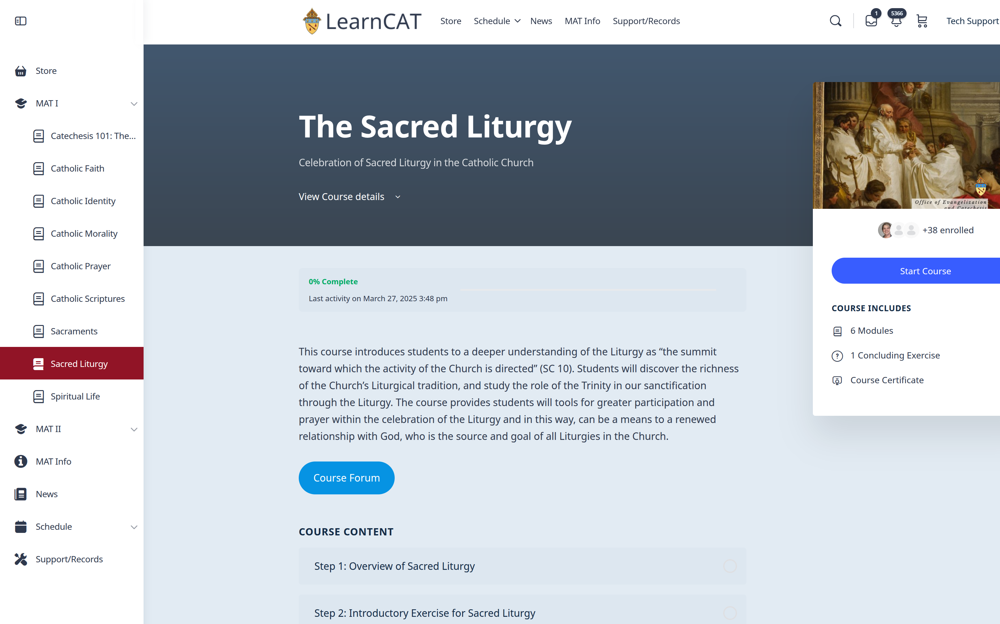
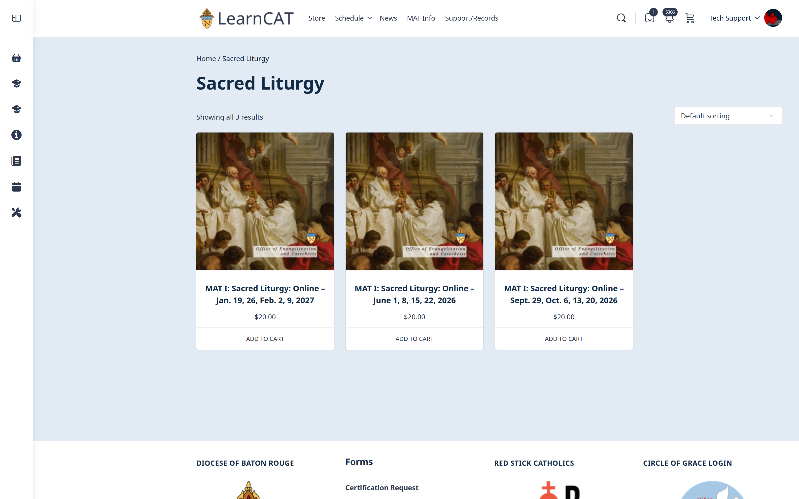
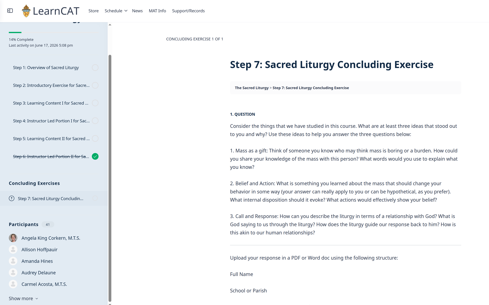

1) LearnCAT: Diocese of Baton Rouge
I architected, configured, and deployed the LearnCAT Learning Management System for the Diocese of Baton Rouge. By designing a centralized, easily accessible digital infrastructure, the system renewed formation efforts and allowed for scalable, asynchronous faith formation and administrative training across diverse parish communities and Catholic schools.This project included the development and implementation of a new eight course curriculum. I employed 5 diocesan instructors to help with course development as subject matter experts. I was the content creator for, The Catholic Identity of the Catholic School course, and the editor for all the others.
Applied Adult Learning Principle: Social Cognition and Communities of Practice: Situated cognition (or social cognition) holds that learning is inseparable from the context in which it occurs. Lave & Wenger have made an enormous contribution to organizational culture in the United States and Canada through the development of our conception of communities of practice. The real gift of their research is that it helped people recognize that learning isn't an individual cognitive exercise.
Adult professionals who participate in communities of practice benefit from the culture of that community in ways that deepen their knowledge and professionalization. I differ from Lave and Wenger in that I am not a strict constructionist but I value their insight. In learning design, especially in particular contexts, I consider how I can facilitate the development of communities of practice (Lave & Wenger, 1991).
This particular design used a blended format with xAPI files exported from Rise for learning content sections.The design has seven stages: 1) Course overview, which is like a syllabus but also includes information about how to use the platform 2) Introductory Exercise - this helps learners start to use the social features of the learning platform and get to know each other (using the forum) 3) Learning Content sections - opportunity for interested adults to grow in knowledge about the various topics 4) Instructor Faciliated Section: cohort is together with a facilitator fielding questions about content and bringing up challenging issues about it. By drawing on the knowledge the cohort already has this kind of facilitation can help professionalize as each learner is particpating and able to contribute - it's not a didactic session.
This pattern is repated with 5) Learning Content II 6) Instructor Facilitated II 7) Concluding Exercise. Using a cohort model and encouraging participants to grow as communities of practice makes this learning experience different than one that is merely didactic. There are elements to the learning content that are more didactic but that is only a small part of the larger course design.
Technical design: This platform was built using the open source version of WordPress, extending it with an LMS called Learndash. The course content was developed using Articulate and those files were exported/imported as xAPI (rather than SCORM). The choice for xAPI was for deeper learner analytics and the relative drag of SCORM files. LearnCAT also utilizes WooCommerce for payment/registration and has a security extension that includes MFA and DDoS protection. This and various forms are automated to send data to Google Sheets.